StoSiS – Methods Handbook
Model, assumptions and methods
StoSiS is a dynamic flowsheet simulation for solids process engineering. This handbook describes what the program computes and how: the assumptions of the model, the methods, their limits and how they are verified. Most chapters follow the same structure – purpose, assumptions, method, limits, verification.
The program interface is in German. Where this handbook refers to an element of the interface, the German name is given in quotation marks. A German version of this handbook is StoSiS_Methodenhandbuch.html.
1Overview
A flowsheet consists of units whose inputs and outputs are connected by streams. A stream carries the mass flow density over the particle size, separately for each compound, together with temperature and pressure. The computation proceeds in time steps: in each step every unit processes exactly one packet from each input. A packet, also called a stream slice, is the material that passes a connection during one time step; it moves from unit to unit with the time steps.
Units may contain random processes, for example a fluctuating split fraction. A result is then not a single curve but a statistic over many runs with different random numbers.
There are two representations of the particles, each valid for a whole simulation:
- Continuum: the stream is a distribution on a fixed size grid.
- Particle mode: the stream is a list of weighted Monte Carlo particles, called MC particles here. Each MC particle carries a size and a mass per compound (Chapter 9).
The computational core is plain C++ without any dependency on the interface; it also runs in automated tests and in batch mode. The interface (Qt) is used to build, configure and evaluate flowsheets. A flowsheet can be saved with all its settings as a JSON file (Chapter 3).
Scope
Available units: inlet, outlet, merger, splitter (fixed or fluctuating), vessel (four mixing types or batch), a size-dependent delay and three separators: screen (by size, with up to three decks), compound separator (by compound) and classifier (by settling velocity). All units work in particle mode. Processes that change particles – coagulation, breakage, growth, nucleation – are not yet included.
2Basic assumptions
- A stream is described by the mass flow density per compound over the particle size. A particle number is not stored; when needed, it follows from mass, size and density.
- Particles are spheres of solid without pores; their density is the solid density of the compound.
- Temperature and pressure are properties of each stream and travel with the material. There is no global ambient temperature.
- An inlet delivers exactly one compound. Mixtures form when streams join in a merger.
- Units compute without iteration, step by step. The time step must be shorter than the shortest residence or recycle time in the flowsheet.
- Randomness arises only in units with a random process. A flowsheet without such units is computed once.
- Internally, all quantities are in SI units (m, kg, s, K, Pa); the interface shows particle sizes in µm.
3Flowsheet and time steps
Material is to move through the flowsheet in time, also through recycles and through units with memory (hold-up). The “Struktur” (structure) window shows how StoSiS divides the flowsheet for this; with all settings, the flowsheet can be saved as a file.
3.1Time steps and order
Assumptions
Each unit has numbered inputs and outputs (ports); at most one connection is attached to each port. Streams are divided and joined only in splitters and mergers, so that the mass balance at every node is unambiguous. All units share a global clock tk = k·Δt with k = 0, 1, 2, …
The time step Δt is the time span that one computation step covers. It applies to the whole simulation and is set in the interface under “Zeitschritt dt [s]” (time step), for example 0.1 s. A packet is thus the material that passes a connection during Δt; its mass is mass flow times Δt (at 100 kg/h and Δt = 0.1 s about 2.8 g). A simulation over the duration tend consists of tend/Δt steps, and the results are available at the times tk. A smaller Δt resolves faster changes and shorter residence times but needs correspondingly more steps; it must be shorter than the shortest residence or recycle time in the flowsheet (Chapter 2).
Method
In each time step (macro step) every unit computes exactly once: it receives one packet at each input and delivers one packet at each output. What remains inside a unit between two steps is its internal state.
The units compute one after the other in flow direction and read the outputs of their predecessors from the same step, as in the Gauss-Seidel method. The order comes from a topological sort (Kahn 1962). Within one step, material thus passes through chains of any length without artificial delay.
Limits
All units use the same time step; there are no finer sub-steps within a unit.
3.2Recycles
Method
A cycle has no first unit, so the topological sort gets stuck there. The graph then selects one unit of the cycle and tears its still open feeds: the target reads the stream of the previous step, and the connection acts like a short pipe with the dead time Δt. If two recycles enter the same merger, both are torn there. The unit is chosen by a fixed rule, so that the result does not depend on the order in which the flowsheet was drawn:
- preferably a merger, since every cycle needs a junction;
- there, an input that comes from a separator – that is where the recycle stream begins, and fresh feed stays undelayed;
- otherwise the unit with the most inputs already computed.
A connection can also be marked as a recycle by hand. Torn connections are drawn as orange dashed lines in the flowsheet.
Limits
Each cycle receives a dead time of one time step. The steady state does not depend on it; the transient shifts by Δt.
Verification
- Cycle of merger and splitter 50/50 with 10 kg/s feed: the start-up follows exactly Mk = 10 + ½ Mk−1, with 20 kg/s in the merger at steady state.
- Cycle with 1 s delay and 30 % recycle: merger 14.2857 kg/s, outlet 10 kg/s; the mass balance including hold-up closes exactly.
3.3The “Struktur” window
The “Struktur” (structure) window shows how the graph divides the flowsheet – as a picture (Figure 3.1) and as a tree in flow direction:
- Each unit is placed to the right of or below the predecessor at its first input.
- The left part of each box shows the step, that is the position in the computation order starting from 1; the right part shows the name of the unit and below it its ID from the file (Chapter 3.4).
- A cycle is a group of units that reach each other through connections (strongly connected component).
- A torn connection ends in an orange “→ Name”: the named unit reads the stream of the previous time step there. A further feed to a unit placed elsewhere ends in a gray “→ Name”.

Verification
Start flowsheet: order inlet, merger, splitter, outlet, process, one cycle of merger, splitter and process, tear process → merger. With two inlets before one merger, the merger appears below the first inlet and a reference below the second.
3.4Flowsheet as a file
A flowsheet can be saved as a file (JSON, format “StoSiS-Flowsheet”, format version 2). It contains all inputs:
- simulation: duration, Δt, seed, number of runs, representation, size grid, MC particles;
- execution: detailed runtime log (it changes the computing time, not the results);
- units with ID, type, name, position and all settings;
- connections from output to input with “recycle”: “manual” (marked by hand), “auto” (torn by the graph) or “no”.
Fixed rules apply when writing and reading:
- Every value is written out, including default values; a file thus computes the same even if a default value changes.
- The graph determines computation order and tears anew from the connections when loading. “auto” is for information only; if the new tear differs, a notice is shown.
- The ID of a unit is kept, because the random stream of the unit is derived from it (Chapter 8).
- Compounds appear only by name and refer to the materials file (Chapter 6).
- A missing field takes its default value with a notice; an unknown field is skipped with a notice; an invalid value stops reading with the location given. Files of format version 1 (“recycle” as true/false) are still read.
Limits
The interface saves and opens flowsheets; when opening, the file is first read into a new flowsheet, and on an error the current one remains. Computing from a file without the interface is possible only in the test programs. Compound data, results, evaluation, MC particle view and window layout are not stored in the file.
Verification
A flowsheet with all unit types and non-default settings is written, read and written again: both texts are identical, and with the same seed all results agree exactly, in the continuum as in particle mode. Files with another format, a newer version, fractions not summing to 1 or a connection to an unknown unit are rejected with the location given. The same file in format version 1 gives the version 2 file again when written.
4Size grid
Purpose
In the continuum the grid is the stream: each stream consists of values at the grid points. In particle mode it serves only to count the MC particles for display and comparison.
Method
The default is a geometric grid in which each grid point is larger than the previous one by a fixed factor r (Figure 4.1):
di = dmin · ri, default 1 µm to 1 mm with 300 grid points
A linear grid can also be selected. At each grid point the mass flow density q(t, d) is stored – a density, not an amount per class. Results thus do not depend on the class width, and every integral has a meaning. On the geometric grid, integration uses the trapezoidal rule in ln d:
ṁ(t) = ∫ d · q(t, d) d(ln d) ≈ ln r · [ ½ d0q0 + d1q1 + … + ½ dnqn ]
The same matrix yields the mass flow over time, the size distribution of the throughput and the total mass. Before computing, the program checks every inlet against the grid and reports if more than 0.1 % of its distribution lies outside.
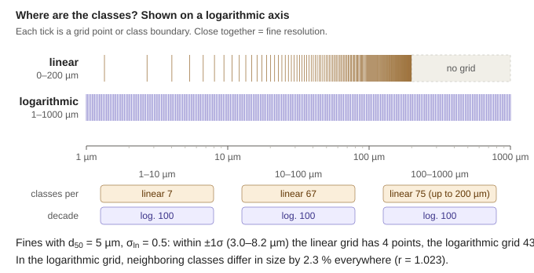
Limits
In the continuum, material outside [dmin, dmax] is missing. The resolution is limited by the number of grid points.
Verification
The fraction captured by the grid matches the exact cumulative distribution Q3(dmax) − Q3(dmin) for five distributions to 1.3 · 10−6. The mass balance over delay and splitter closes to 3 · 10−14 kg of 50 kg.
5Inlet and size distributions
Purpose
The inlet feeds material with a given mass flow and a given size distribution into the flowsheet.
Assumptions
The mass flow ṁ(t) is piecewise linear between support points and continued as a constant outside them. The shape of the distribution stays the same over time; only its height follows the mass flow: q(t, d) = ṁ(t) · q3(d).
Method
The distribution is given as mass density q3(d) or cumulative distribution Q3(d) – Q3(d) is the mass fraction of all particles smaller than d.
| Distribution | Parameters | Cumulative distribution or density |
|---|---|---|
| Log-normal (default) | d50, σln | q3 = 1/(d σln √(2π)) · exp(−ln²(d/d50) / (2σln²)) |
| RRSB | d′, n | Q3 = 1 − exp(−(d/d′)n) |
| GGS | dmax, m | Q3 = (d/dmax)m for d ≤ dmax |
| Table | points (di, Q3,i) | Q3 linear in ln d between the points |
| Normal (not recommended) | d0, σ | Gaussian bell curve; allows d < 0, hence with a warning |
The default is log-normal with d50 = 100 µm and σln = 0.25: particle sizes are positive and their distributions mostly skewed. RRSB (Rosin-Rammler-Sperling-Bennett) and GGS (Gates-Gaudin-Schuhmann) are common in comminution. The table takes measured distributions, for example from a sieve analysis, without inventing a shape between the points.
In the continuum, each grid point receives exactly the mass that falls to it when the mass is shared according to the position between the neighbors (hat function in ln d). The sum over all grid points is thus exactly Q3(dmax) − Q3(dmin), even if the density jumps, as for GGS at the largest grain. In particle mode the inlet creates MC particles according to the MC particle density (Chapter 9.3).
Limits
The distribution is constant in time; a changing distribution arises only via several inlets and a merger. The hat function smooths the peak slightly – for the default inlet by at most 7 · 10−4 of the maximum.
Verification
For all distributions, Q3(quantile(p)) = p holds to 10−8 relative, and the mass fed in each time step matches the feed profile.
6Compounds, temperature and pressure
Purpose
Several compounds are to pass through the flowsheet together, and compound properties such as density, heat capacity or viscosity are to be available at the respective temperature and pressure.
Assumptions
A stream carries a separate distribution on the same grid for each compound, together with one temperature and one pressure. Simple units such as splitter and delay pass both on unchanged.
Method
The compound data are stored in a materials file in JSON format (data/Materialien.json) with 18 compounds. Each property is a constant, a formula (ideal gas, Sutherland, Antoine, polynomials) or a table over temperature, each with its range of validity, source and review status. If there are several entries, the first one with temperature and pressure in range applies, then one with the temperature in range, otherwise the one with the nearest temperature limit; values outside the range or beyond the measured points are flagged. The active compounds of a flowsheet follow from its inlets.
Only the heat capacity cp(T) is stored; the enthalpy follows by integration, h(T) = ∫ cp dT from 298.15 K. When streams join, the energy balance applies: the mixing temperature is the temperature at which the enthalpy of the mixture equals the sum of the enthalpies fed in. It is solved with Newton's method, safeguarded by bisection between the coldest and the warmest inlet temperature. For constant heat capacity this gives
Tmix = Σ ṁi cp,i Ti / Σ ṁi cp,i
The pressure after mixing is the lowest input pressure of a stream carrying material. A junction has only one pressure, and material flows only from higher to lower pressure.
Limits
The values are initially taken from the database of Dyssol (Skorych, Dosta & Heinrich 2020) and are marked as unreviewed until they are checked; conspicuous entries carry a warning. If a compound lacks the heat capacity, the temperature is averaged by mass and a notice is given. There is no gas phase as carrier medium.
Verification
- Sand at 20 °C and 80 °C in the mass ratio 10 : 5 mixes to 40.000 °C, sand with urea to 48.92 °C – the closed-form solution for constant heat capacity.
- The mass balance per compound over merger and splitter holds to 10−15.
- The viscosities of nitrogen, oxygen and air lie within 1 % of the reference equations of Lemmon & Jacobsen (2004) up to 500 K.
7Units
7.1Merger
The merger adds the mass flow densities of its inputs per compound; temperature and pressure follow from Chapter 6. In particle mode it concatenates the MC particles of all inputs (Figure 7.1).
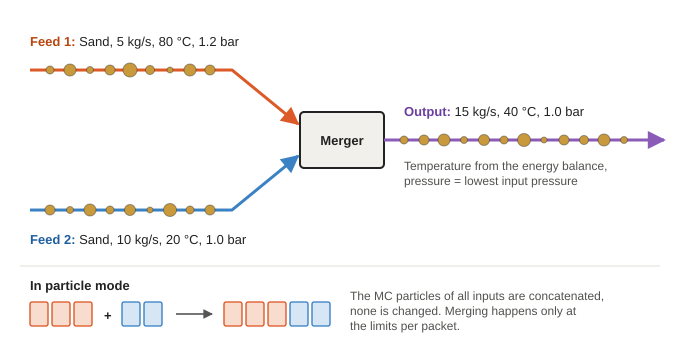
Because the energy balance uses the heat capacity of each compound, the mixing temperature of two different compounds does not lie on the straight line of the mass fractions (Figure 7.2).
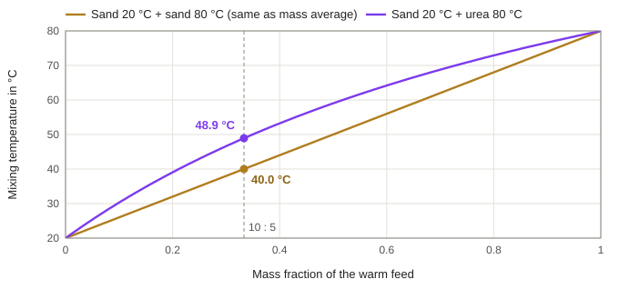
7.2Splitter
Purpose
The splitter divides a stream among two or three outputs as a pure quantity divider: the fraction is the same for all particle sizes (Figure 7.3).
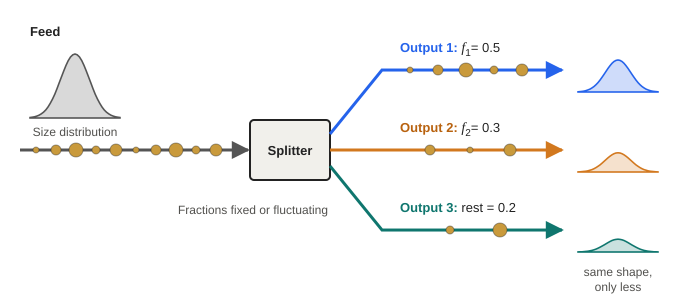
Assumptions
The fractions are fixed or fluctuate around a mean with correlation in time. The last output always receives the rest.
Method
In fluctuating mode, the fraction gi of each output except the last follows an Ornstein-Uhlenbeck (OU) process (Uhlenbeck & Ornstein 1930) with mean μ, standard deviation σ and correlation time τ:
dg = −(g − μ)/τ · dt + σ √(2/τ) dW
The process is stationary and normally distributed, always returns to the mean and has exactly one correlation time. It is updated exactly (Gillespie 1996) instead of with the Euler method, so that mean, standard deviation and time behavior do not depend on the time step:
gk+1 = μ + (gk − μ) a + σ √(1 − a²) ξ, a = e−Δt/τ, ξ ~ N(0, 1)
The process starts already in equilibrium, g(0) ~ N(μ, σ²). Fractions outside [0, 1] are clipped; if the sum of the fluctuating fractions exceeds 1, they are scaled down proportionally. Mass is conserved exactly in every step. The random process continues without feed, so that the random sequence depends only on the seed. In particle mode the account method distributes the MC particles (Chapter 9.4); it only implements the fraction and adds no fluctuation of its own (Figure 7.4).
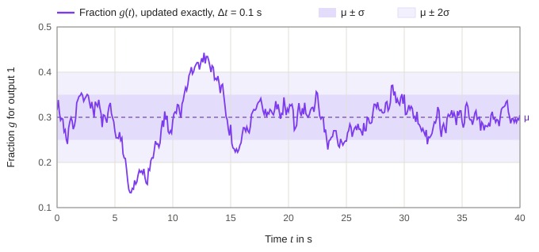
Limits
For large σ, clipping shifts the mean slightly; the editor gives a notice if μ ± 3σ lies outside [0, 1]. Separation by size is done by the screen (Chapter 7.5), by compound by the compound separator (7.6), by size and density by the classifier (7.7).
Verification
| Case | Expectation | Result |
|---|---|---|
| μ = 0.3, σ = 0.05, τ = 2 s, Δt = 0.1 s | mean 0.3, standard deviation 0.05, autocorrelation after 2 s e−1 = 0.368 | 0.301 / 0.049 / 0.353 |
| the same with Δt = 0.5 s | same statistics | 0.301 / 0.050 / 0.368 |
| τ = 0 | no autocorrelation | 0.005 |
| three outputs, σ = 0.03 and 0.06 | standard deviation of the rest √(0.03² + 0.06²) = 0.067 | 0.066 |
7.3Size-dependent delay
The delay holds back material for a time that depends on its size:
tdelay(d) = tref · (d / dref)p
Its hold-up is a ring buffer of the last inputs; between the points in time it interpolates linearly. Before the start the feed counts as zero, and the interpolation also runs between this zero value and the first step; so the first feed step arrives completely as well. Each place in the buffer keeps the temperature and pressure of its material, and material arriving at the same time is mixed as in the merger. The unit is a placeholder for transport models based on residence time distributions.
In particle mode, each MC particle has the delay of its own size, in time steps tdelay/Δt = q + r with whole steps q and the remainder 0 ≤ r < 1. Of the feed of one step, the fraction 1 − r leaves after q steps and the rest r after q + 1, as for plug flow in the vessel (7.4). MC particles are not divided: the account method sends each whole MC particle “early” or “late” (Chapter 9.4). The MC particles wait in bins, one per exit step, and carry the temperature and pressure of their entry step. If the delay of an MC particle reaches beyond the end of the simulation, it remains as hold-up in the unit.
7.4Vessel
Purpose
The vessel holds back material – a stirred tank, a fluidized bed, a pipe or a silo. It smooths fluctuations of the feed and gives the material a residence time distribution.
Assumptions
The outflow follows a fixed mean residence time τ, as for through-flow with τ = V/Q; a batch has no outflow. Which material leaves is determined by the mixing behavior. Four cases with the same mean residence time can be selected (Figures 7.5 and 7.6; Danckwerts 1953, Levenspiel 1999):
| Mixing | Who leaves | Residence time distribution |
|---|---|---|
| ideally mixed | all material with the same probability, independent of its age | exponential |
| plug flow | the oldest first | everything exactly τ |
| cascade of n tanks | tank by tank, each τ/n | Erlang (gamma) |
| core flow | the fraction φ as plug flow in κτ through the core, the rest mixed through the outer zone | early breakthrough, long tail |
The outer zone has τR = (1 − φκ) τ / (1 − φ), so that the mean stays τ; the defaults are φ = 60 % and κ = 0.3. At t = 0 the vessel is empty, filled as in continuous operation (feed at t = 0 times τ, with its size distribution) or filled with a given mass, compound and size distribution.
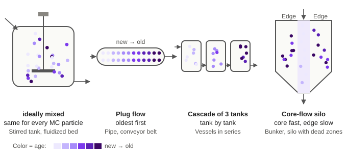
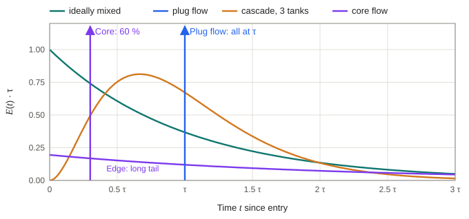
Only in the ideally mixed vessel does the probability of leaving in the next step not depend on age (Figure 7.7). With the survival curve S(t), the fraction still in the vessel after the time t, this probability is p(t) = 1 − S(t + Δt) / S(t). Therefore only the mixed vessel and the tanks of the cascade need no memory; in the pipe an MC particle must remember its age, in the silo its zone.
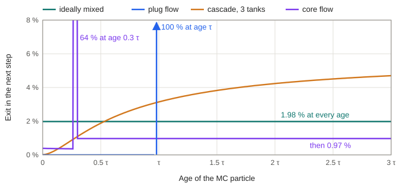
Method
Each step brings the feed times Δt into the vessel; the output shows what leaves during the step, divided by Δt. The step formulas are exact for a feed that is constant within the step. In the ideally mixed vessel the content decreases according to dH/dt = −H/τ; per step, the fractions leaving the content and the feed of the same step are
a = 1 − e−Δt/τ, b = 1 − (τ/Δt) a ≈ Δt/(2τ)
In plug flow a feed step leaves after τ; if τ/Δt = q + r is not an integer, the fraction 1 − r leaves after q steps and the rest after q + 1. In the cascade, material from one tank moves on by m tanks in one step with the Poisson probability Pm (λ = nΔt/τ), material from the feed with Qm = P(X > m)/λ; whatever would go beyond the last tank leaves. Core flow combines a plug-flow part and an ideally mixed part. Temperature and pressure follow for each zone from the energy balance, as in the merger.
In particle mode whole MC particles leave. Which ones is decided by the account method with the accounts “go” and “stay” (Chapter 9.4): each MC particle leaves with the same probability regardless of weight and age, and every size region loses its share. An MC particle only remembers where it is – in the content, in a tank, or in the step in which it leaves. In continuous operation, by Little's law (Little 1961), N τ/Δt MC particles are in the vessel. The stock therefore grows with τ/Δt: it holds (τ/Δt + 2) feed steps with at most 2 N MC particles each (upper limit per packet), at least the set value × N and at most 10 million MC particles. Only beyond that are newly arriving MC particles merged in pairs as in the limits per packet (Chapter 9.5). Example: a tank with τ = 641 s at Δt = 0.5 s and 2000 MC particles per step holds about 5.1 million MC particles.
Besides the outflow, the content is a result of its own (“Behälter, Inhalt” in the interface, vessel content). After each step StoSiS records the mass per compound and size in kg, in particle mode mapped onto the grid like the streams (Chapter 9.6), together with temperature and pressure of the mixture. For the content Hk after step k, with inflow ṁin,k and outflow ṁout,k in kg/s,
Hk = Hk−1 + (ṁin,k − ṁout,k) Δt
Because step k takes in the feed of a whole Δt, Hk corresponds to the content of a continuously computed vessel at time tk + Δt. For a constant feed ṁ into the empty, ideally mixed vessel this is Hk = τ ṁ (1 − e−(k+1)Δt/τ); with τ = 10 s and 1 kg/s the content rises to 10 kg. For the batch, the content is the actual result.
Limits
The residence time is fixed. A controlled fill level, a prescribed discharge (metering screw) and a size-dependent discharge are not included. The MC particle view shows only the outflow, not the MC particles in the content. If the stock is full, the outflow carries fewer, heavier MC particles and fluctuates more.
Verification
| Case | Expectation | Result |
|---|---|---|
| Constant feed into the empty vessel, all four mixing types | outflow per step = mean of the closed-form survival curve over the step | continuum to 6 · 10−14; particle mode (400 MC particles per step) at most 3.7 MC particles per step, accumulated 8 |
| Pulse | mean residence time τ | continuum exact; particle mode with MC particles of equal weight to 0.4 % |
| Mass balance; filling as in continuous operation; washout of another compound | exact; outflow = feed from the first step, N τ/Δt MC particles in stock; decay as (1 − a)k | met, in both representations |
| Stock according to τ/Δt (τ/Δt = 100, N = 100) | room for (τ/Δt + 2) × 2 N = 20 400 MC particles, nothing merged | met; 10 000 MC particles in stock |
| Stock full (τ/Δt = 100, stock limited to 10 × N MC particles) | outflow = feed | feed merged about 10 : 1, outflow off by 0.36 % on average |
| Fluctuating splitter upstream (σ = 0.05, τOU = 2 s, τ = 10 s) | standard deviation of the outflow from the step formula | 1000 runs: off by 0.8 %; particle mode follows the continuum to at most 1.1 % per step |
| Plug flow, τ/Δt = 50.5, one heavy and one light MC particle (10 : 1) per size | outflow = feed | at most 9.7 % per step; without redrawing 82 % in every second step |
| Fluctuating feed (σ/μ = 0.167, τOU = 2 s) directly into the mixed vessel, 400 MC particles per step | target a · content/Δt + b · feed | standard deviation 0.94 % around the target, off by 0.05 % on average |
| Content as result: 1 kg/s into the empty, ideally mixed vessel (τ = 10 s, Δt = 0.2 s), 400 MC particles per step | Hk = τ ṁ (1 − e−(k+1)Δt/τ) and balance per step; at the end equal to the mass in the vessel | continuum to 3 · 10−15, balance to 2 · 10−14 in both representations; particle mode at most 6 feed MC particles off the continuum |
| Batch with an initial filling of 30 kg at 350 K, without feed | content the same in every step, at the filling temperature | met, in both representations |
7.5Screen
Purpose
The screen divides the feed by particle size into coarse (output 1) and fines (output 2). The same unit describes any classifier whose separation can be expressed by a grade efficiency curve over size; if a classifier also separates noticeably by density, the classifier unit (7.7) is the right one. A screen has two to four outputs, that is one to three decks on top of each other (multi-deck screen); the number of outputs is fixed when the unit is created.
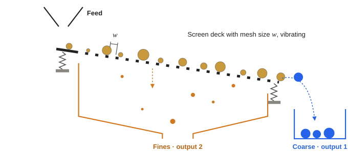
Assumptions
Separation is by size only, the same for all compounds. The grade efficiency T(d) is the mass fraction of particles of size d that goes to the coarse fraction; it is fixed in time and does not depend on the load. The screen holds nothing back; temperature and pressure stay the same. The three grade efficiency curves of Dyssol (Skorych et al. 2020) can be selected, with the cut size xcut (where T is about 0.5), the sharpness α and, for Teipel-Hennig only, a second sharpness β and the offset o. All three depend only on the relative size x = d/xcut:
| Model | Grade efficiency T(d) | T(xcut) |
|---|---|---|
| Plitt (1971) | 1 − exp(−0.693 xα) | 0.49993 |
| Molerus-Hoffmann (1969) | 1 / (1 + x−2 exp(α (1 − x²))) | 0.5 |
| Teipel-Hennig (Hennig and Teipel 2016) | (1 − (1 + 3 x(x + α) β)−1/2) (1 − o) + o | 0.5 (1 − o) + o |
The larger α, the steeper the curve; for the same α, however, the three models differ in steepness (Figure 7.9). They can be compared via the sharpness of separation κ = d25/d75, the ratio of the sizes with T = 0.25 and T = 0.75; an ideal step would have κ = 1. The number 0.693 in Plitt's model is ln 2, so that T(xcut) is almost 0.5. The offset o is the fraction that reaches the coarse fraction regardless of size, for example fines sticking to coarse grains. The probability model of Dyssol (normal distribution over the classes) is not included because it depends on the size grid.
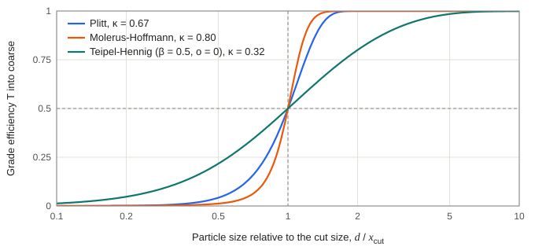
Several decks
A screen with n outputs has n − 1 decks, each with its own grade efficiency curve Tk(d) and cut size; the cut sizes decrease from top to bottom. The feed first hits deck 1. What stays on deck k goes to output k, the undersize falls onto the next deck, and the undersize of the lowest deck is the fines in the last output. The fraction tk of size d in output k is thus
tk(d) = Tk(d) · (1 − T1(d)) ⋯ (1 − Tk−1(d)), tn(d) = (1 − T1(d)) ⋯ (1 − Tn−1(d)),
together 1 for every size. Example with two decks at 60 and 30 µm: output 1 receives the material above 60 µm, output 2 that between 30 and 60 µm, output 3 that below 30 µm, each with the transitions of the grade efficiency curves. With one deck, t1 = T(d) is the coarse fraction and t2 = 1 − T(d) the fines.
Method
In the continuum, at each grid point and for each compound, the feed times tk(d) goes to output k, for one deck thus T(d) to the coarse fraction and 1 − T(d) to the fines. The last output receives the rest, so mass is conserved exactly. In particle mode whole MC particles go according to the account method (Chapter 9.4), each MC particle bringing its own fractions tk. An MC particle that can go to only one output (for example T = 0 or T = 1 with one deck) goes there without an account.
Limits
The grade efficiency curve does not depend on throughput, screen area or moisture; overloading and the residence time on the screen are not modeled. The decks act independently of each other: each separates its feed with the same curve, however much arrives. The screen does not separate by density or compound (for that, 7.6 and 7.7). An MC particle carries one size; a mixture of different sizes in one MC particle, for example after an agglomeration, is separated as a whole by this size.
The cut size xcut is not the mesh size w. A rigid sphere above w passes no mesh; below w a grain passes per attempt only with a certain probability, for a square mesh without wire fraction about (1 − d/w)² (Gaudin 1939), that is 1 % at d = 0.9 w. Many grains just below w therefore reach the end of the deck, and xcut is usually below w. Elongated grains, slotted screens and mesh tolerances, on the other hand, also let grains above w through. The three curves reach 1 only asymptotically. xcut and α should therefore be chosen so that practically nothing above the mesh size goes to the fines. An example of values that are too flat: Plitt with α = 8 and xcut = w still sends 23 % of grains 10 % above w to the fines; with xcut = 0.8 w and α = 18 it is only 2 · 10−17 already at d = w.
Verification
| Case | Expectation | Result |
|---|---|---|
| All three models with the default values of Dyssol (xcut = 2 mm, α = 8, β = 0.5, o = 0.2), 10 µm to 10 mm | the same values as the formulas in Dyssol; T rises with d | off by at most 6 · 10−17; met |
| Continuum, two compounds, Molerus-Hoffmann | coarse = T(d) · feed, coarse + fines = feed | exact and to 10−15 |
| Particle mode, two compounds with 2000 MC particles each around xcut = 100 µm, Plitt with α = 3, 1000 steps | coarse 0.56962 of the feed; each compound and size range with its T(d) | 0.56956; per compound and range off by at most 7.6 · 10−4; number of MC particles and mass conserved in every step |
| Accounts in the same case | at most half an MC particle share (2.07 · 10−4) | 2.06 · 10−4 |
| MC particles with T = 0 and T = 1, 200 steps | always to the fines or the coarse fraction | met |
| Three decks (Plitt at 2 mm, Molerus-Hoffmann at 500 µm, Teipel-Hennig at 100 µm), continuum, two compounds | like three screens in series, each fed with the fines of the previous one; sum of the four outputs = feed | to 1.1 · 10−16 and 1.1 · 10−16 of the largest value |
| Two decks at 60 and 30 µm (Plitt, α = 20), two log-normal compounds (d50 = 45 µm, σln = 0.5 and 70 µm, 0.4) with 2000 MC particles each, 1000 steps | fractions of the three outputs from the distributions exactly 0.3827 / 0.4595 / 0.1577 (sharp cut: 0.3744 / 0.4648 / 0.1608) | 0.3827 / 0.4596 / 0.1577; per compound, range and output off by at most 7.6 · 10−5; accounts below one MC particle share (3.7 · 10−4 at 4.8 · 10−4) |
| Settings of several decks | rising or equal cut sizes, an invalid deck and a wrong number of decks rejected; fractions per size between 0 and 1, sum 1 | met |
7.6Compound separator
Purpose
The compound separator divides the feed by compound: of each compound a fixed fraction goes to output 1 (“separated”), the rest to output 2. This describes, for example, a magnet that removes iron scrap from construction waste, or manual sorting.
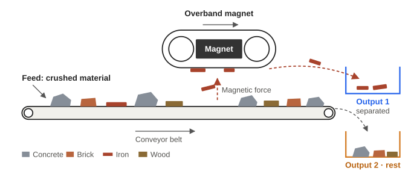
Assumptions
The fraction fk depends only on the compound k, not on size, and is fixed in time. Compounds without an entry go entirely to output 2. Each compound thus has the same size distribution in both outputs. The compound separator holds nothing back; temperature and pressure stay the same.
Method
In the continuum, fk · feed goes to output 1 at each grid point. In particle mode the account method distributes whole MC particles as in the screen (Chapter 9.4), with T = fk instead of T(d). An MC particle with several compounds, which exists only after a coagulation, goes as a whole with the mass-averaged fraction Σ mk fk / Σ mk, with the mass mk of compound k in the MC particle.
Limits
A magnet that captures fine iron less well than coarse iron is not modeled. Intergrown grains, for example reinforcing steel in concrete, are separated by the compound separator only as an MC particle with several compounds and then according to the average. If a compound in the list does not occur in the flowsheet, a notice is given.
Verification
| Case | Expectation | Result |
|---|---|---|
| Continuum, three compounds with f = 0.95 / 0 / 0.1 | output 1 = fk · feed, both outputs together = feed | exact and to 10−15 |
| Particle mode, three compounds with 1000 MC particles each, f = 0.95 / 0 / 0.3, 1000 steps | output 1 0.22143 of the feed; each compound and size range with its fk | 0.22133; per compound and range off by at most 4.8 · 10−3; accounts below half an MC particle share |
| One MC particle of iron (f = 0.95) and sand (f = 0) in equal masses, 1000 steps | fraction 0.475 | 475 times in output 1 |
7.7Classifier
Purpose
The classifier separates by settling velocity in a fluid, that is by size and density at the same time. With air it describes an air classifier, with water a settling tank or an upflow classifier. Output 1 receives the heavy fraction, which settles, output 2 the light fraction, which the fluid carries away. In the processing of concrete rubble it thus separates light materials such as wood and plastics from the mineral fraction.
Assumptions
The particles are spheres (Chapter 2). What matters is the steady settling velocity ws of a single grain of size d and density ρp in the fluid at rest with density ρf and dynamic viscosity η. At this velocity the weight force FG minus the buoyancy FA equals the drag force FW:
FG − FA = FW
Inserted, with the gravitational acceleration g and the drag coefficient cw:
(π/6) d³ (ρp − ρf) g = cw (π/4) d² ρf ws²/2, cw = 24/Re + 4/√Re + 0.4, Re = ws d ρf / η
The drag coefficient cw says how strongly the fluid slows the grain. For a sphere it depends only on the Reynolds number Re, the ratio of inertial to viscous forces (cw ≈ 253 at Re = 0.1; 0.42 for 20 mm sand in air). The formula after Kaskas (Brauer 1971; Stieß 2009) holds from the Stokes regime up to Re = 2 · 105. For small Re it turns into Stokes' law, for large Re it approaches the Newton value 0.4 (Figure 7.11).
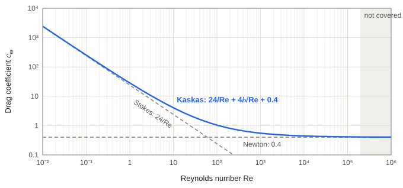
The grade efficiency is one of the three grade efficiency curves of the screen (Chapter 7.5), plotted over x = ws / wcut instead of d / xcut. The cut velocity wcut is the upward air velocity u for the air classifier (Figure 7.12) and the surface loading Q/A for the settling tank, the volume flow Q of the water through the tank area A (Figure 7.13). Density and viscosity of the fluid and the density of each compound come from the materials file, at the temperature and pressure of the feed. A grain that is not heavier than the fluid does not settle and goes to the light fraction.
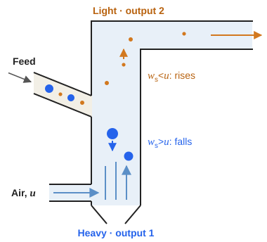
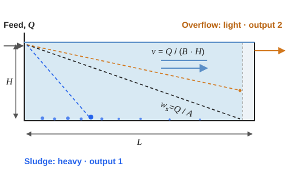
Method
With the Archimedes number Ar = d³ (ρp − ρf) ρf g / η², which contains only grain and fluid data and no ws, the force balance reads
cw Re² = 24 Re + 4 Re3/2 + 0.4 Re² = 4/3 Ar
In √Re this is a polynomial that rises and is convex. Newton's method, started above the solution (each term alone gives an upper bound), therefore falls monotonically onto the only root. In the continuum the classifier computes a table of T per compound and grid point and renews it only when temperature or pressure of the feed change; T · feed goes to the heavy fraction. In particle mode the account method distributes whole MC particles as in the screen (Chapter 9.4), each with its own T(ws(d, ρ)). An MC particle with several compounds has the density m / Σ (mk/ρk), the mass m of the MC particle divided by the volume of all compounds with their densities ρk. Each compound thus gets its own grade efficiency curve over size; the lighter the compound, the further right it lies (Figure 7.14).
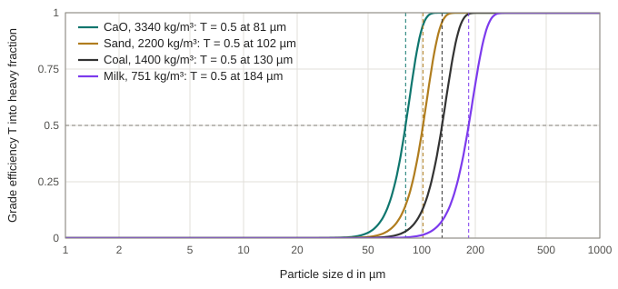
Limits
The computation uses a single grain: hindered settling at high solids concentration, grain shape, load and turbulence in the classifying zone enter only through the sharpness α. The fluid is not a stream of its own; air and water enter neither the balance nor the outputs. Beyond Re = 2 · 105 the formula of Kaskas is not supported by data, and the classifier then gives a notice. If a compound lacks the density or the materials file lacks the fluid, this material goes entirely to the light fraction with a notice.
Verification
| Case | Expectation | Result |
|---|---|---|
| Air and water, densities 1400, 2200 and 7870 kg/m³, 0.1 µm to 100 mm (Re up to 9.6 · 105) | force balance with cw after Kaskas; ws rises with d | off by at most 1.1 · 10−15; met |
| Sand in air, 1 µm and 0.1 µm | ws lies about √Re/6 below Stokes (3.5 · 10−4 and 1.1 · 10−5) | met to 1 % |
| Sand in air, 20 mm | Newton regime | ws = 33.8 m/s, Re = 4.5 · 104, cw = 0.42 |
| Continuum, sand and coal, in air (wcut = 1 m/s) and in water (0.01 m/s), Molerus-Hoffmann | heavy fraction = T · feed per compound and grid point; at every size sand at least as much in the heavy fraction as coal | exact; met |
| Particle mode, air, Plitt with α = 3 and wcut = 0.3 m/s, 2000 MC particles each of sand and coal, 1000 steps | heavy fraction 0.61059 of the feed; each compound and size range with its T | 0.61104; per compound and range off by at most 1.8 · 10−3; accounts below half an MC particle share |
| Compound without density, unknown fluid, MC particle with Re > 2 · 105 | to the light fraction or computed, each with a notice | met |
7.8Outlet
The outlet receives the arriving stream and records it.
8Random numbers and multiple runs
Purpose
The same seed is to give the same result on every system, and units are to receive random numbers independent of each other. Many runs yield the statistics of a result.
Method
- Generator: Mersenne Twister mt19937_64 (Matsumoto & Nishimura 1998); uniform distribution from the upper 53 bits; normal distribution with the polar method (Marsaglia & Bray 1964). The normal distribution of the C++ standard library is not used because its algorithm differs between libraries.
- Seed per unit: Seedunit = SplitMix64(Seed ⊕ SplitMix64(FNV-1a(node ID))), with SplitMix64 after Steele, Lea & Flood (2014). The random sequence of a unit thus depends only on the global seed and its identifier, not on the drawing order, and two units do not fluctuate in step.
- Runs: run 1 uses the set seed, further runs use derived seeds. The default is 20 runs.
- Statistics: mean and variance per cell are updated in one pass with Welford's method (Welford 1962), numerically stable and with Bessel's correction. Full matrices are kept for run 1, the mean and the standard deviation; for each run, the mass flow over time, the size distribution and the total mass are stored in addition.
- Display: mean with a band of ±1σ, ±2σ or the 5–95 % percentiles (linear interpolation, type 7 after Hyndman & Fan 1996), optionally with the individual runs. The marginal distributions of the standard deviation heatmap are computed from the individual runs, not by integrating the standard deviation matrix, because the size classes are correlated with each other.
Limits
The uncertainty of a mean falls as 1/√N: a hundred times more runs make it only ten times more accurate. Percentiles are meaningful only from about 20 runs.
Verification
For a splitter behind a constant feed ṁ, the variance of the mass M that reaches an output within the time T has a closed form:
E[M] = μ ṁ T, Var[M] = 2 ṁ² σ² τ ( T − τ (1 − e−T/τ) )
With ṁ = 10 kg/s, μ = 0.3, σ = 0.05, τ = 2 s and T = 40 s the expectation is 120.000 kg ± 6.164 kg; 2000 runs give 120.058 kg ± 6.094 kg. The deviation of the standard deviation of −1.1 % lies within the statistical uncertainty of 1.6 %. The error falls with the number of runs as 1/√N (Figure 8.1).
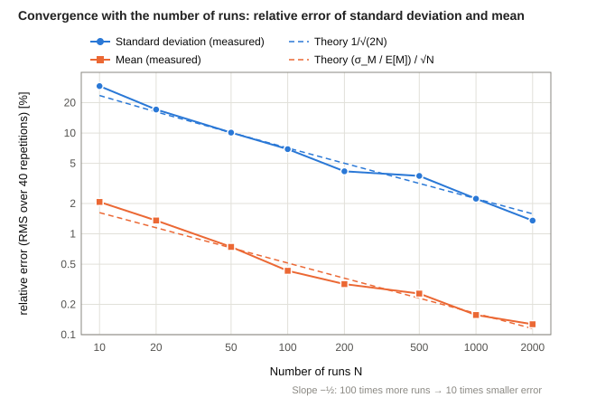
9Particle mode: MC particles
9.1Weighted Monte Carlo particles
In particle mode a stream consists of MC particles. An MC particle is a weighted Monte Carlo particle, in the literature also called a weighted simulation particle (Zhao, Kruis & Zheng 2009; Kotalczyk & Kruis 2017): a computational particle that represents a group of identical real particles.
An MC particle stands for a group of identical particles within one packet, that is within one time step Δt. It carries a size d and a mass mk per compound k: the mass of these particles in the packet. Rates arise only where a flow is needed (results, plots, continuum): mass flow ṁk = mk / Δt. Its weight w – the number of real particles it represents – follows for compact spheres from mass and size:
w = Σk (mk / ρk) / (π d³ / 6)
The principle is that of a survey in which a few respondents with their characteristics stand for many people: a few thousand MC particles per packet describe a stream of billions of particles. Where there is much material there are many MC particles; size ranges without material cost nothing.
Particles instead of a grid pay off when a particle carries several properties, such as size, porosity and fractal dimension. In the continuum each property needs an axis of the grid, and each cell stores a number whether material lies there or not. An MC particle stores only its properties and its weight. With M classes per axis, n properties and N MC particles this gives:
Grid: Mn numbers MC particles: N · (n + 1) numbers
The grid grows exponentially with the number of properties, the MC particles grow linearly (Figure 9.1). With 32 classes per axis and 2000 MC particles:
| Properties n | Grid Mn | MC particles N · (n + 1) |
|---|---|---|
| 1 | 32 | 4000 |
| 3 | 32 768 | 8000 |
| 5 | 3.4 · 107 | 12 000 |
In the grid, empty cells also occupy memory: in the example distribution with three properties, 99 % of the mass lies in 1017 of the 32 768 cells (3.1 %). MC particles lie only where material is, and carry exact values instead of classes. For a single property, on the other hand, the grid is smaller and free of noise; in this example the crossover lies at n ≈ 2.6. This agrees with the estimate of Shima et al. (2009) for cloud droplets, according to which computational particles need less computing time than a grid from about two to four properties on. The price of MC particles is a statistical noise wherever MC particles are drawn or distributed at random; it falls as 1/√N.
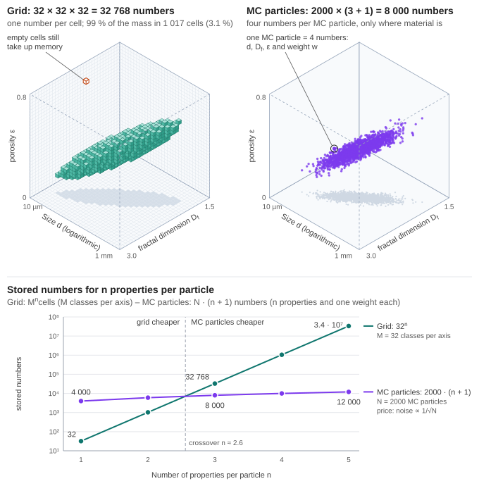
For processes such as coagulation, in which pairs of particles matter, the difference grows further (Figure 9.2). A grid couples every cell with every other, that is (Mn)² cell pairs per time step; with 32 classes and three properties these are 1.1 · 109. A Monte Carlo method, in contrast, does not search all pairs: it draws partners and accepts a pair with a probability proportional to the coagulation kernel (acceptance-rejection; Kruis, Maisels & Fissan 2000). In a time-driven method this is about one attempt per MC particle and time step, that is of the order of N pairs, independent of the number of properties; even all N² pairs of MC particles would stay at 4 · 106. If the grid paired only the occupied cells, there would still be 1017² ≈ 106 pairs for three properties, about 500 times the drawn pairs of MC particles.
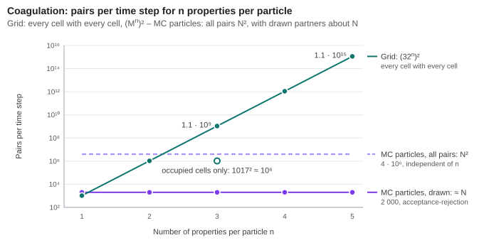
The building blocks of weighted Monte Carlo methods reappear in the particle mode:
| Weighted Monte Carlo method | Particle mode |
|---|---|
| simulation particle | MC particle |
| properties: size, composition | size d, mass flow ṁk per compound |
| weight: number of real particles represented | weight w |
| number of simulation particles | MC particles per inlet packet, N |
| distribution of the simulation particles over size, for example via weighting functions (DeVille, Riemer & West 2011) | MC particle density (Chapter 9.3) |
| splitting and merging of simulation particles (Zhao, Kruis & Zheng 2009; Kotalczyk & Kruis 2017) | limits per packet (Chapter 9.5) |
| events between simulation particles, for example coagulation | not yet included (Chapter 1); size, composition and weight are available on every MC particle |
“Monte Carlo” describes the method: random numbers decide what happens to the particles. In particle mode these are the fluctuating split fraction of a splitter, the random start positions of the account method in splitter and vessel, and the drawing of the leaving MC particles in the bins of the vessel (Chapter 9.4); many runs give the statistics (Chapter 8). At the inlet, by contrast, the MC particles are created without randomness, one in the middle of each strip of equal area under the MC particle density (Chapter 9.3), and are thus free of noise. In one dimension this is the point set with the smallest discrepancy, as used by quasi-Monte Carlo methods; for the coagulation equation, Lécot & Wagner (2004) likewise order the particles by mass and use low-discrepancy sequences instead of random numbers.
The representation applies to the whole simulation, from inlet to outlet. A simulation in particle mode starts only if all units of the flowsheet can process MC particles. The number of MC particles per inlet packet, N, is adjustable (default 2000); it determines how accurately one run reproduces the distribution.
9.2The card index picture
The two representations can be pictured as a type case and a card index (Figure 9.3). The continuum resembles a type case with a fixed compartment for each size and compound, in which only the mass lying in it is recorded. In particle mode a card index takes its place: one card per MC particle, holding size, mass per compound and weight. A further property is a further line on the card, and cards exist only for what actually occurs. After this picture, the German interface of StoSiS calls an MC particle a “Karte” (card); the windows in Figures 9.5 and 10.1 use this term.
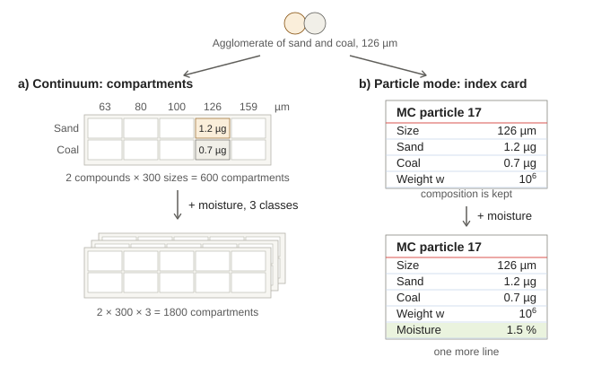
Depending on the field, the weighted computational particle has different names in the literature: weighted simulation particle (Zhao, Kruis & Zheng 2009), parcel (Dukowicz 1980) or super-droplet (Shima et al. 2009). This handbook uses “MC particle” throughout and “particle” only for the real grains: “an MC particle represents a million particles”. Likewise, MC particle density, number of MC particles and mass per MC particle refer to the computational particles, whereas particle density, particle number and particle mass refer to the real grains.
9.3MC particle density and MC particles at the inlet
Purpose
The MC particles are to be distributed over size so that both mass-based results (mass flow, d50) and number-based results (fines, particle number) have usable statistics.
Method
The MC particle density c over ln d is a mean of the mass density q3* and the number density q0* (both per ln d, area 1), flattened with the exponent γ:
c(d) ∝ M(q3*, q0*)γ
| Rule | Mean M | Property |
|---|---|---|
| Sum (default) | (1 − f) q3* + f q0* | without flattening, no MC particle carries more than 1/(1 − f) times the mean mass and 1/f times the mean particle number |
| Quadratic | ((1 − f) q3*² + f q0*²)1/2 | follows the larger one more strongly; bounds 1 + √(f/(1 − f)) and 1 + √((1 − f)/f) |
| Product | q3*1 − f · q0*f | one hump between mass and number, thin edges, no bound |
The fraction f weights the number (0 = mass only, 1 = number only); γ = 1 means no flattening, smaller values give both edges more MC particles; the interface shows the effect as a preview (Figure 9.5). The default is the sum with f = 0.5 and γ = 0.8. The sum is a defensive mixture in the sense of Hesterberg (1995): because mass and number each contribute with a fixed share, the weight of every MC particle stays bounded. All three means are homogeneous of degree 1, so that splitting and merging of MC particles stay consistent.
Packet-internal weight of an MC particle. The same mean M also rates each single MC particle i of a packet, from its mass share mi/Σm and its number share ni/Σn in the packet (particle number ni ∝ mi/di³):
ai = M(mi/Σm, ni/Σn), si = ai / Σa
The weight si is packet-internal: all sums run only over the MC particles of the same packet, and Σs = 1 in every packet. It tells how much an MC particle carries compared with the other MC particles of its packet, not how much mass or how many particles it carries in absolute terms; that is the real weight w from Chapter 9.1. Between different packets s is not comparable. Example: an MC particle with s = 0.001 carries one thousandth of its packet; if the mass flow doubles, the same MC particle carries twice the mass and twice the particles with the same s. With flattening it becomes the share in the MC particle density, the packet-internal weight ŝi ∝ ai · ρiγ − 1, also normalized to 1 per packet; ρi is the density of a over ln d at the size of the MC particle (sum of a of MC particles of that size divided by the width of their cell in ln d). At the inlet every MC particle carries ŝ ≈ 1/N. Splitter and screen use s, compound separator, classifier and the limits per packet use ŝ (Chapters 9.4, 9.5).
At the inlet the area under the MC particle density is divided into N equal strips (Figure 9.4). Each strip receives one MC particle, placed in its middle; its mass is the mass of the strip, exact from Q3. Sizes and mass fractions are thus fixed once, and each time step scales them with the current mass flow – without randomness, the same in every step.
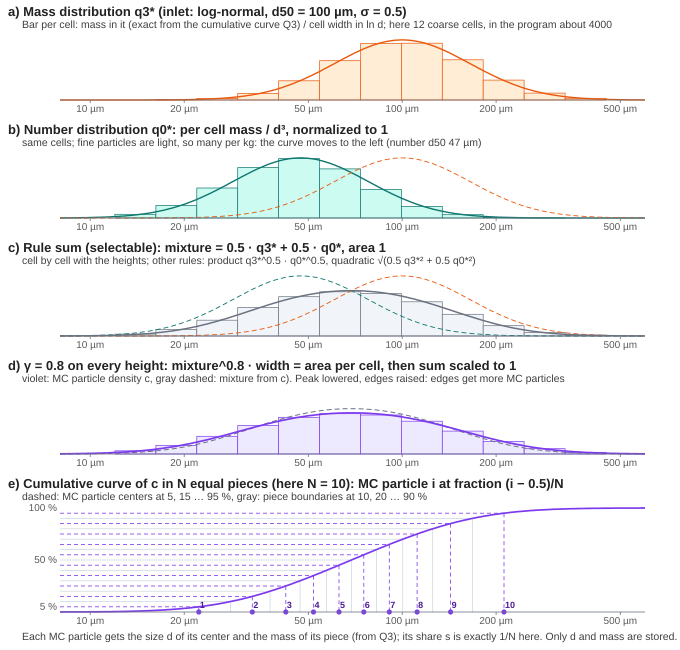
Particles below the smallest grid point, dmin, count for the MC particle density as if they had the size dmin. The grid does not resolve below it, and for distributions whose particle number grows without limit towards small sizes (for example RRSB with n < 3), the number would otherwise be unbounded.

Limits
The noise of a size region falls with the square root of the number of MC particles lying there. The two edges serve as indicators: the finest 5 % of the particles and the coarsest 5 % of the mass. If an edge receives fewer than 10 MC particles per time step, the inlet reports this together with remedies still possible with the current settings. For distributions with many very fine particles, some of the MC particles lie below dmin.
Verification
The placement agrees with an independent calculation; for the sum without flattening, mass and particle number per MC particle stay below the bounds. At the inlet each MC particle in the interior carries the share 1/N of the MC particle density to within 0.1 %.
9.4Account method
Splitter, vessel, delay, screen, compound separator and classifier distribute whole MC particles to their targets without copying them or rolling a die for each MC particle (Figure 9.6). The MC particles of a step are ordered by compound and, within it, by size, and are passed through once in a ring starting from a random position. Each MC particle deposits into the account of every target and goes entirely to the one with the highest balance; this account is charged. The accounts carry over from step to step, and their sum stays zero. Ordering by compound ensures that each compound on its own is divided in the right proportion. In statistics this selection is called systematic sampling: the same chance for every MC particle as with a die, but without its scatter in the count.
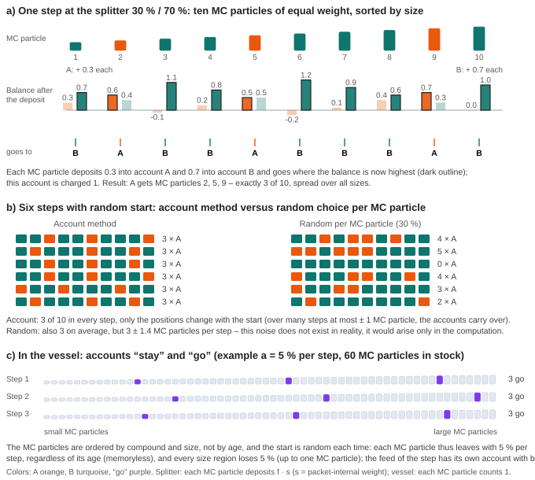
Splitter
Each MC particle deposits fi · s into the account of each output i; the chosen account is charged s. Here s is the packet-internal weight of the MC particle without flattening (Chapter 9.3): si = ai / Σa with ai = M(mi/Σm, ni/Σn), the mean of the mass and number share of the MC particle in its packet; s adds up to 1 per packet. Thus s depends only on the MC particle itself, and half an MC particle carries half the weight. With flattening, every further MC particle of the same size would lower the weight; in a cycle such MC particles lie exactly where the account previously divided into the recycle, and a splitter 70/30 would return 29.76 % instead of 30 % of the mass. This way, of neighboring MC particles every (1/f)-th goes to an output with the fraction f – for light MC particles just as for heavy ones, by number as by mass. The start position comes from a separate random stream; the course of the fluctuating fraction is therefore the same in the continuum and in particle mode for the same seed.
The mass per output deviates from the target by about one MC particle per step and stays of the order of 10−5 of the throughput over many steps. There is no rescaling: a factor per output would be a ratio of random quantities and would bias outputs with few MC particles.
Vessel
As each MC particle in the vessel either goes or stays in a step, there are two accounts, “go” and “stay”. Each MC particle deposits the exit fraction a per step and 1 − a, respectively (Chapter 7.4), and the chosen account is charged one whole MC particle. Each MC particle thus has the same exit probability regardless of its weight; with shares of the MC particle density, heavy MC particles between light ones would leave less often. The MC particles of each zone lie in bins per compound and size class (100 classes per decade), unordered within a bin. StoSiS computes the walk of the account over all n MC particles from a random start in one jump: with g = account “go” − ½, the k-th leaving MC particle is at position jk = ⌊(k − 1 − g)/a⌋ + 1, that is every (1/a)-th; afterwards g has grown by n a minus the number of leaving MC particles, exactly as after the walk MC particle by MC particle. The positions give how many MC particles leave each bin; which ones is drawn within the bin, so that leaving depends neither on age nor on weight. A step thus touches only the leaving MC particles, not the whole stock. In the cascade each tank draws one target after the other, first the exit, then one tank further and so on, each with the share of the rest; so every target is right to within one MC particle. The feed of a step has its own account with the fraction b.
Rolling a die per MC particle would give the same on average, but would scatter with the number of MC particles instead of the number of real particles. In the standard case (2000 MC particles per step, τ = 10 s, Δt = 0.2 s) the outflow would thus fluctuate by 2.2 % per step; with the account method and MC particles of equal weight by 0.05 %; the real particles – about 109 per step – fluctuate by 0.003 %.
Delay
As each MC particle leaves either after the whole steps q of its delay or one step later (Chapter 7.3), there are two accounts, “early” and “late”. Each MC particle deposits 1 − r and r, respectively, where r is the remainder of its own delay, and the chosen account is charged one whole MC particle. Both accounts apply to all MC particles; how many steps “early” and “late” mean is stored in the MC particle. Because the two accounts sum to zero, one balance l for “late” is enough: an MC particle goes “late” if l > ½ after its deposit. The number of “late” MC particles among the first i is then exactly the rounded sum of the remainders, Li = ⌈l0 + r1 + … + ri − ½⌉.
In the output of a step, MC particles of different sizes from different entry steps come together. Each group with the same whole delay q is balanced only within its entry step; per exit step each group therefore deviates by about one MC particle, not the whole stream. In the standard case (2000 MC particles, about 25 groups) the outflow per step lies up to 0.5 % off the continuum, without systematic error; mass is conserved exactly.
Screen
As each MC particle goes either to the coarse or to the fine fraction, there are two accounts for one deck, “coarse” and “fines”, and one per output for several decks (Chapter 7.5). Each MC particle deposits tk(d) · s with its own size d into the account of output k, for one deck thus T(d) · s and (1 − T(d)) · s, and goes to the output with the highest balance among those with tk > 0. As in the splitter, s is the packet-internal weight without flattening, because a screen often sits in a recycle, for example in a grinding circuit with the oversize returning to the mill. Because the fractions depend on size, there is one set of accounts per compound and size range (factor 2, like the ranges of the MC particle view): a balance thus never wanders into another range or compound, and within a range in which T changes little, every (1/T)-th MC particle goes to the coarse fraction for one deck. A balance stays below half an MC particle share for one deck and below a whole one for several. MC particles that can go to only one output touch no account.
Compound separator and classifier (Chapters 7.6, 7.7) compute in the same way with two outputs, with the same pairs of accounts per compound and size range (“separated” and “rest” or “heavy” and “light”), but with the packet-internal weight ŝ with flattening (Chapter 9.3). Only the fraction of the MC particle differs: for the compound separator the fraction fk of its compound, for the classifier T(ws) with the settling velocity from its size and density.
Limits
If the MC particles differ in weight, for example with a fluctuating feed, the outflow of a vessel scatters about as with random selection of the MC particles (0.83 % at σ/μ = 0.167 and 400 MC particles per step). A single pulse of N MC particles of different weight shows a noise of about σT · CV / √N in the mass-weighted residence time, with the coefficient of variation CV of the weights; in continuous operation it averages out over the MC particles in stock.
9.5Limits per packet
Behind mergers, splitters and recycles the number of MC particles changes: a cycle with the recycle fraction R multiplies it by 1/(1 − R), a small splitter fraction thins it out. Therefore two limits apply to the packet at every output of a unit; in the interface they are switched on with “Grenzen je Stromscheibe” (limits per stream slice). They are measured with the packet-internal weight ŝ, the share in the MC particle density (Chapter 9.3): not with the real weight w, not with the mass and not with the particle number alone, but with the mean of mass and number share in the packet, flattened as at the inlet. At the inlet every MC particle carries ŝ ≈ 1/N; 5/N is thus five times an average inlet MC particle.
- At most 2N MC particles per packet. Merging starts only when a packet holds more than 2N MC particles. Its MC particles are then ordered by compound combination and, within it, by size. Possible pairs are two MC particles that are neighbors in this order, have the same compound combination and carry at most 5/N together. The pairs with the smallest sum ŝ1 + ŝ2 are merged first, for equal sums the one with the smallest size gap. These are not simply the smallest MC particles: light pairs lie where there are more MC particles than the MC particle density asks for, while the deliberately light MC particles at the edges of the distribution have a normal ŝ and remain. Afterwards the shares are recomputed and merging continues until at most 2N MC particles remain or no pair fits. Mass and particle number are conserved, the new size follows from d³ = (m1 + m2) / (m1/d1³ + m2/d2³).
- No MC particle with ŝ above 5/N. A heavier MC particle is split into k = ⌈ŝ N/5⌉ equal pieces of the same size and composition; the distribution does not change.
Example: two equal feeds at a merger give 2N MC particles with ŝ ≈ 1/(2N) each, just within the limit; nothing is merged. In a cycle with R = 0.9 about 10N MC particles would gather without the limit, with the limit 2N remain. Inlets are exempt; their MC particles already follow the MC particle density.
Verification: 20 000 MC particles from ten packets are merged into 4000, and d10, d50 and d90 shift by at most 0.014 %; a recycle with R = 0.9 keeps at most 4000 MC particles in the cycle; splitting changes the result on the grid by 5.5 · 10−16.
9.6Mapping onto the grid
For curves, heatmap and evaluation, the MC particles are mapped onto the size grid: each MC particle gives its mass proportionally to the two neighboring grid points, linearly according to its position in ln d (cloud-in-cell). Mass and mean ln d are conserved exactly. An MC particle view (“Karten” in the interface) also shows the distributions directly from the MC particles – density, cumulative curve, MC particles per class and the course over time – next to the mean of all runs.
9.7Verification of the particle mode
- Inlet → outlet: the mass flow at the outlet matches the feed profile in every step (relative 10−12), the cumulative distribution deviates from the continuum by less than 0.2 % of the mass flow.
- Two inlets → merger → fluctuating splitter: with the same seed, the outlet mass flows per step lie at most about one MC particle off the continuum; every compound arrives completely.
- MC particles of very unequal weight (splitter 70/30): of the finest 5 % of the particles, 69.97 % of the MC particles and 69.92 % of the mass go to the 70 % output, and no output is left without a fine MC particle in any step.
- Loss-in-weight feeder (Chapter 11): mean and standard deviation in particle mode as in the continuum.
- Vessel (Chapter 7.4): all four mixing types against their closed-form residence time distribution, mass balance exact, stock according to Little, lot drawing for MC particles of equal size and different weight and for a fluctuating feed.
- Delay (Chapter 7.3): with the same delay 2.3 Δt for all MC particles, 70 % of the feed arrives after 2 steps, then the whole feed in every step; the number of MC particles is kept (± 2). A pulse of 2000 MC particles with size-dependent delay arrives completely, each MC particle after q or q + 1 steps; the mean arrival matches the mean delay (10.3173 versus 10.3174 steps), and in each fifth of the sizes as many MC particles go “late” as the remainders add up to (at most 0.95 MC particles off). In the flowsheet, feed = outflow + content holds to 10−15; if the feed starts already at t = 0 with 2 kg/s, MC particles and continuum lie at most 0.4 % apart per step also during start-up, and the outflow mass up to 40 s is the same (76.2728 kg). With the delay in a recycle (splitter 70/30), the outlet lies at most 0.29 % off the continuum at steady state, and the merger stays below 2N MC particles.
Continuum versus particle mode
The ten flowsheets of the regression test (Chapter 11.1) run once on the size grid and once with N = 500, 2000 and 8000 MC particles per inlet packet. At every output and every vessel content the comparison covers:
- the mass flow per step: largest deviation, relative to the mean mass flow of this output,
- the total mass over the whole simulation time, relative,
- the cumulative distribution Q3 of the throughput: largest distance between the two curves in percentage points.
The table shows the worst output of each flowsheet. The exponent a gives how the deviation of the mass flow falls with the number of MC particles (deviation ∼ Na, from N = 500 and 8000). Pure noise of the MC particles gives a = −0.5. “Chain” means inlet → delay → outlet with the reference time tref and the size exponent p of the delay (7.3).
| Flowsheet | Mass flow per step N = 2000 | Mass flow per step N = 8000 | a | Total mass N = 8000 | Q3 distance N = 2000 [pp] |
|---|---|---|---|---|---|
| Start flowsheet (inlet → delay → outlet) | 0.77 % | 0.16 % | −0.93 | 5.9 · 10−6 | 0.014 |
| Cycle: two inlets, fluctuating splitter, delay in the recycle | 2.1 % | 1.0 % | −0.79 | 1.4 · 10−5 | 0.013 |
| Chain, tref = 2 s, p = 1 | 0.83 % | 0.26 % | −0.77 | 4.9 · 10−6 | 0.010 |
| Chain, tref = 0.37 s, p = −1 | 0.34 % | 0.081 % | −1.06 | 9.8 · 10−7 | 0.004 |
| Chain without delay | 10−13 % | 10−13 % | – | 4 · 10−16 | 0.004 |
| Chain, tref = 5 s, p = 3 | 1.5 % | 0.89 % | −0.58 | 6.1 · 10−5 | 0.023 |
| Splitter 20/30/50 → merger, RRSB distribution | 0.56 % | 0.16 % | −0.99 | 1.0 · 10−5 | 0.009 |
| Start flowsheet, logarithmic grid | 0.60 % | 0.15 % | −0.96 | 2.3 · 10−6 | 0.008 |
| the same with recycle (splitter 70/30) | 3.9 % | 1.4 % | −0.63 | 2.3 · 10−5 | 0.012 |
| Cycle, logarithmic grid | 4.1 % | 1.1 % | −0.71 | 1.8 · 10−6 | 0.016 |
All deviations of the mass flow fall with N at least as 1/√N. Only 30 to 40 % of the MC particles flow in the recycle; there the noise at N = 2000 is still 2 to 4 % per step. The test therefore checks the mass flow per step at N = 8000 to 2 %, the total mass at N = 8000 to 10−4 and Q3 at N = 2000 to one percentage point (pp). Where Q3 does not fall further (chains with p = 1 and 3, 0.01 to 0.02 percentage points), the grid error of the continuum remains; for p = 3 the mass flow therefore also falls more slowly. For the two cycles, in addition, the mean over 20 runs matches the continuum to 0.5 %, and the standard deviation per step is the same (1.000 to 1.002 times).
10Evaluation
Curves show mass flow, temperature and pressure over time or the distribution over size, each with a band over the runs. The heatmap shows the mass flow density over time and size with both marginal distributions; it can be switched between run 1, mean and standard deviation.
For the content of a vessel (Chapter 7.4), mass appears everywhere instead of mass flow: in the curves the quantity “Masse (Inhalt)” (mass, content) in kg, in the heatmap the mass density in kg/µm. Its margins show the mass over time and the time-averaged size distribution, because an integral over time, as for the throughput of a stream, would have no meaning here.
The “Auswertung” (evaluation) window processes the mass flow of an output the way a measurement is evaluated (after Engisch & Muzzio 2012); for the content of a vessel it reads the mass like a load cell:
- Mean over time windows, for example 1 s as with a scale; the start-up time can be excluded.
- Outlier filter: first set point ± x %, then repeatedly ± kσ until nothing changes.
- Key figures: mean, standard deviation, relative standard deviation, skewness and the correlation of neighboring values.
- Density histogram with a band over all runs, probability plot and time series; export as CSV.
Only streams that depend on a unit with randomness are offered. For a deterministic stream, the course over time would otherwise appear as a spurious scatter. A runtime log records which unit computed when and for how long.
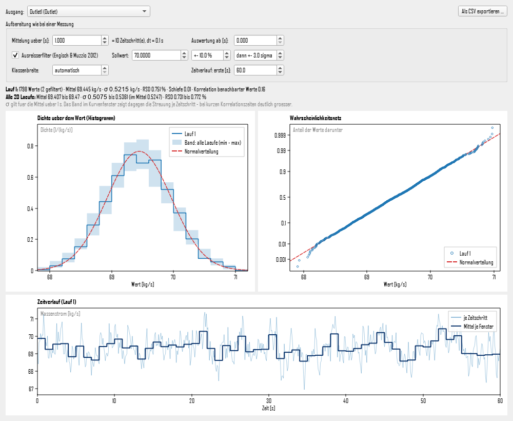
11Verification and validation
11.1Levels of verification
Checks are made on three levels.
- Verification: does the program compute what the model says? Analytical solutions, balances and the convergence behavior with 1/√N serve this purpose.
- Comparison with other programs such as Dyssol or PharmaPy: same models, same results?
- Validation: does the model match reality? Only an experiment can show this.
The verification checks are 19 test programs in the repository and run with one command (CTest). Stochastic tests run with a fixed seed; their tolerances follow from the statistical error and are not chosen freely. A regression test monitors key figures of fixed flowsheets. The flowsheets of Sections 11.3 to 11.5 are available as files in Flowsheets/Validierungs-Flowsheets and can be opened in the interface.
A comparison with other programs on common flowsheets is not yet available. Checked against measured data are the fluctuating splitter (11.2) and the dry granulation line (11.5); for the blender (11.4) a residence time curve from the literature serves as reference. Measured values available only as a figure were read off the figure.
11.2Loss-in-weight feeder
Engisch & Muzzio (2012) measure the mass flow of a loss-in-weight feeder for lactose with a catch scale read every 0.1 s. The feeder controls its mass flow via a load cell to the set point of 70 kg/h; what remains is a fluctuation from the screws, the agitator and the powder flow. In StoSiS an inlet with 100 kg/h is followed by a fluctuating splitter: its mean share μ = 0.6944 stands for the controller, the Ornstein-Uhlenbeck process (σ = 0.81 kg/h, τ = 0.3 s) for the remaining fluctuation. The simulation covers 30 min with Δt = 0.1 s. Both data series are evaluated in the same way: 1-s means, filter ±10 % around the set point, then iteratively ±3σ.
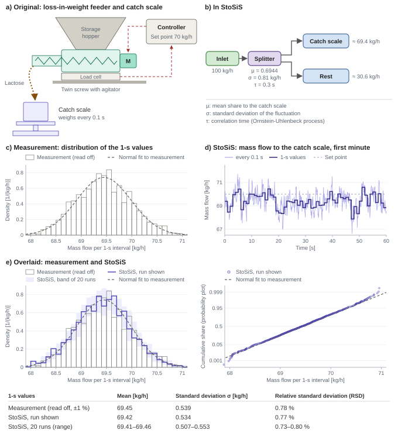
Both distributions are normal and statistically indistinguishable: mean and standard deviation match the measurement to 0.04 % and 1 %, and 28 of 32 bars of the measured histogram lie within the band from 20 runs (Figure 11.1 e). This validates the shape of the fluctuation, not its prediction: μ and σ are fitted to the measurement. The correlation time τ cannot be determined from the distribution; τ = 0 to 3 s gives the same histogram, only the correlation of successive 1-s values changes (0.03 to 0.81), and that would need the raw data. Periodic components in the measured signal, for example from stirrers and screws, are not reproduced by the Ornstein-Uhlenbeck process.
11.3Compartment models after Levenspiel
Levenspiel (1999) builds real apparatus from pipes (plug flow), mixed tanks, bypasses, dead zones and recycles; for these compartment models the residence time distribution is known exactly. Four of them are rebuilt in StoSiS from splitter, vessel and merger. A tracer pulse of 1 kg in the first time step (Δt = 0.1 s) passes through each. The comparison uses the cumulative curve F(t), the fraction of the tracer that has left by time t. The reference here is a formula, not a measurement: this checks whether StoSiS computes the models correctly (verification).
Each figure shows a) the original model, b) the rebuild in StoSiS with its parameters, c) the exact solution, d) the outflow in StoSiS and e) both overlaid with mean and standard deviation of the residence time. The flowsheet files are in Flowsheets/Validierungs-Flowsheets.
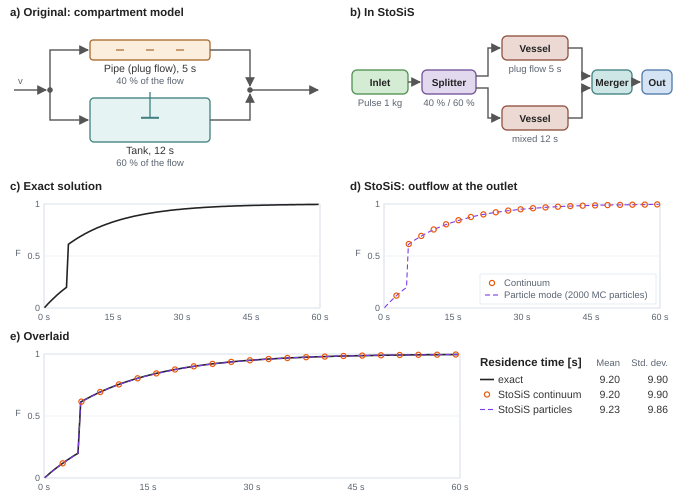
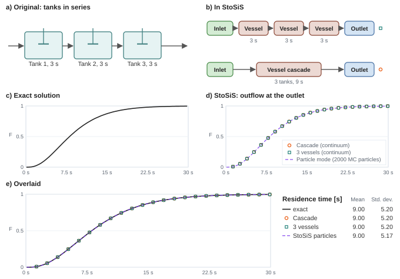
The two remaining cases run in the same test. A tank with 20 % bypass and 20 % dead zone matches the exact solution per step to 10−9 of the maximum. For the pipe with recycle (R = 1.5), each further pass takes one time step longer in StoSiS, because the cycle is torn (Chapter 3.2): the mean lies R · Δt = 0.15 s above the 5 s after Levenspiel, and with this dead time StoSiS agrees exactly.
In particle mode the means match to at most 0.7 %. Individual steps are noisy because a single pulse has only 2000 MC particles (Chapter 9.4).
11.4Continuous blender
Engisch & Muzzio (2016) determine the residence time of each unit in a direct compaction line with a tracer experiment and describe it as tanks in series. For the blender they show a residence time curve with the mean 68.8 s and the standard deviation 22.4 s (their Fig. 17). From this follows the number of tanks n = (mean/std. dev.)² = 9.4; StoSiS models the blender as a vessel with a cascade of 9 tanks (Δt = 0.2 s). The curve is available only as a figure and was read off it pixel by pixel: time axis from the drawn lines for mean and standard deviation, area normalized to 1.
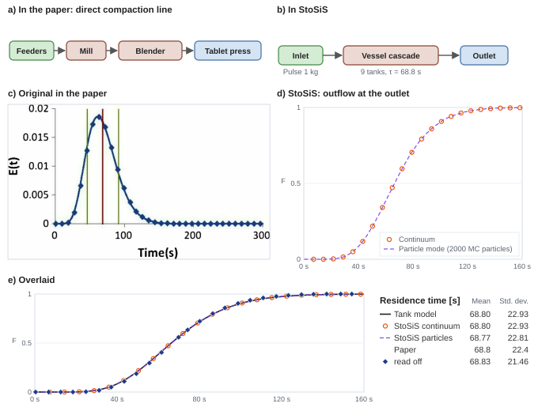
A second case from the paper (base case with 41.6 s and 12 s, that is 12 tanks) runs in the same test and matches the key figures at 41.60 s and 12.01 s; the paper gives no curve for it. This checks the shape of the curve for a fixed tank model. The number of tanks is taken from the paper and is not predicted.
11.5Dry granulation line
Martinetz et al. (2018) study a continuous line of feeders, blender, bucket conveyor, roller compactor, pneumatic conveyor and tablet press. For each unit they determine a model (transfer function) from step experiments: blender and compactor as two tanks with dead time, the two conveyors as pure dead time (half the collection time), the press as one tank with dead time. The parameters come from experiments at 10 and 15 kg/h and are transferred linearly to 8 and 12.5 kg/h (their Table 2). In the experiments the mass fraction of the active pharmaceutical ingredient (API) at the entry of the whole line steps from 10 to 20 %; it is measured after the compactor (NIR probe, near-infrared spectroscopy in the granule stream) and at the tablets (NIR chemical imaging, NIR-CI, plus offline UV/Vis), twice at each of the four throughputs.
Figure 11.5 summarizes the case. The original figures are not freely licensed; the figure is an own representation, and the measured values were read off the figures of the paper.
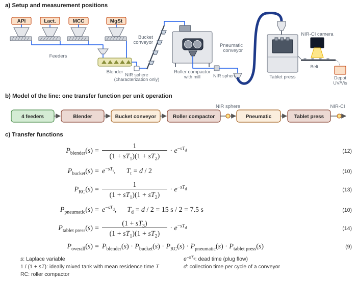

In StoSiS each transfer function becomes a chain of vessels (Figure 11.6 a). A factor 1 / (1 + sT) is an ideally mixed vessel (tank) with the mean residence time T, the dead time e−sTd a vessel with plug flow. For the press, T1, T2 and T3 are equal; the numerator cancels one factor of the denominator, leaving one tank with T1. API and excipients come from two inlets via a merger, all vessels start in continuous operation, and the time step Δt is 0.5 s. The parameters are those of Table 2 of the paper, without fitting. For each throughput a flowsheet file is available in Flowsheets/Validierungs-Flowsheets.
In the continuum StoSiS follows the model of the paper to 2 · 10−4 percentage points; the particle mode with 2000 MC particles per inlet packet scatters around it without offset (Figure 11.6 b). Against the measured values, the root mean square deviation (RMSD) of StoSiS lies between 0.61 and 1.10 wt%, that of the models of the paper (their Table 3) between 0.47 and 1.23 wt% (c). StoSiS thus matches the measurement as well as the authors' model. The values of StoSiS are computed against the measured points read off, those of the paper against the original data.

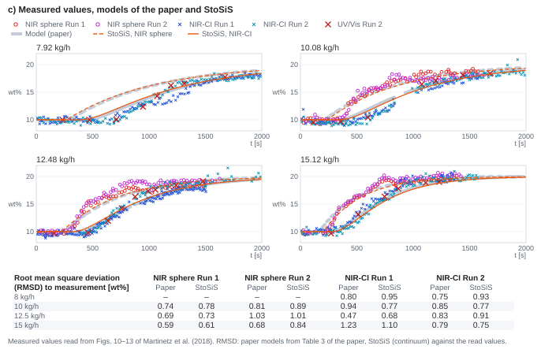
12Glossary
- Flowsheet, unit, port
- The flow diagram of process units, connected through numbered inputs and outputs (ports).
- Macro step, packet (stream slice)
- One global time step Δt; the material that passes a connection during this step. A packet moves from unit to unit with the time steps; at an inlet it carries N MC particles in particle mode.
- Hold-up
- Material that remains in a unit between two steps.
- Residence time, residence time distribution
- Time from entry to exit; its distribution E(t) and cumulative curve F(t) over all material passing through a vessel (Chapter 7.4).
- Stock
- The MC particles inside a vessel in particle mode (Chapter 7.4).
- Computation order
- The sequence in which the units compute in each time step; in the “Struktur” window the step on the left of each box (Chapter 3.3).
- Cycle
- Group of units that reach each other through connections; this is where a connection is torn (Chapter 3.2).
- Torn connection
- The connection in a cycle whose target reads the stream of the previous step.
- Run, seed
- One complete simulation with one sequence of random numbers; the start value of this sequence.
- Grid point
- Size at which the mass flow density is stored in the continuum.
- Q3, q3, q3*, q0*
- Cumulative mass distribution, its density over d, the mass density and the number density per ln d (area 1).
- MC particle
- Weighted Monte Carlo particle (simulation particle) of the particle mode: a group of identical particles within one packet, with size and mass per compound; called “Karte” (card) in the German interface (Chapters 9.1, 9.2).
- Weight of an MC particle
- The real weight w: number of real particles that an MC particle represents in its packet (Chapter 9.1).
- Packet-internal weight
- Share s of an MC particle in its packet, from the mean of its mass and number share; with flattening ŝ, the share in the MC particle density. Sums to 1 per packet and is meaningful only within the packet (Chapter 9.3).
- MC particle density
- The density according to which MC particles are distributed over size (Chapter 9.3).
- Account method
- Distributes whole MC particles to targets without rolling a die for each one: each MC particle deposits into every account and goes to the one with the highest balance (Chapter 9.4).
- Grade efficiency, grade efficiency curve, cut size, sharpness
- Mass fraction of the particles of one size that goes to the coarse fraction (screen) or heavy fraction (classifier); its course over size; the size with the grade efficiency 0.5; κ = d25/d75, 1 for an ideal step (Chapter 7.5).
- Settling velocity, cut velocity
- Steady velocity at which a single grain settles in the fluid at rest; the settling velocity at which a classifier sends about half to the heavy fraction (Chapter 7.7).
- Heavy fraction, light fraction
- The two outputs of the classifier: what settles, and what the fluid carries away.
13References
Brauer, H. (1971): Grundlagen der Einphasen- und Mehrphasenströmungen. Sauerländer, Aarau.
Danckwerts, P. V. (1953): Continuous flow systems. Distribution of residence times. Chemical Engineering Science 2(1), 1–13.
DeVille, R. E. L.; Riemer, N.; West, M. (2011): Weighted Flow Algorithms (WFA) for stochastic particle coagulation. Journal of Computational Physics 230(23), 8427–8451.
Dukowicz, J. K. (1980): A particle-fluid numerical model for liquid sprays. Journal of Computational Physics 35(2), 229–253.
Engisch, W. E.; Muzzio, F. J. (2012): Method for characterization of loss-in-weight feeder equipment. Powder Technology 228, 395–403.
Engisch, W. E.; Muzzio, F. J. (2016): Using residence time distributions (RTDs) to address the traceability of raw materials in continuous pharmaceutical manufacturing. Journal of Pharmaceutical Innovation 11, 64–81.
Gaudin, A. M. (1939): Principles of Mineral Dressing. McGraw-Hill, New York.
Gillespie, D. T. (1996): Exact numerical simulation of the Ornstein-Uhlenbeck process and its integral. Physical Review E 54, 2084–2091.
Hazen, A. (1904): On sedimentation. Transactions of the American Society of Civil Engineers 53, 45–88.
Hennig, M.; Teipel, U. (2016): Stationäre Siebklassierung. Chemie Ingenieur Technik 88, 911–918.
Hesterberg, T. (1995): Weighted average importance sampling and defensive mixture distributions. Technometrics 37(2), 185–194.
Hyndman, R. J.; Fan, Y. (1996): Sample quantiles in statistical packages. The American Statistician 50, 361–365.
Kahn, A. B. (1962): Topological sorting of large networks. Communications of the ACM 5, 558–562.
Kotalczyk, G.; Kruis, F. E. (2017): A Monte Carlo method for the simulation of coagulation and nucleation based on weighted particles and the concepts of stochastic resolution and merging. Journal of Computational Physics 340, 276–296.
Kruis, F. E.; Maisels, A.; Fissan, H. (2000): Direct simulation Monte Carlo method for particle coagulation and aggregation. AIChE Journal 46, 1735–1742.
Lécot, C.; Wagner, W. (2004): A quasi-Monte Carlo scheme for Smoluchowski's coagulation equation. Mathematics of Computation 73, 1953–1966.
Lemmon, E. W.; Jacobsen, R. T (2004): Viscosity and thermal conductivity equations for nitrogen, oxygen, argon, and air. International Journal of Thermophysics 25, 21–69.
Levenspiel, O. (1999): Chemical Reaction Engineering. 3rd edition, Wiley, New York.
Little, J. D. C. (1961): A proof for the queuing formula: L = λW. Operations Research 9(3), 383–387.
Martinetz, M. C.; Karttunen, A.-P.; Sacher, S.; Wahl, P.; Ketolainen, J.; Khinast, J. G.; Korhonen, O. (2018): RTD-based material tracking in a fully-continuous dry granulation tableting line. International Journal of Pharmaceutics 547, 469–479.
Marsaglia, G.; Bray, T. A. (1964): A convenient method for generating normal variables. SIAM Review 6, 260–264.
Matsumoto, M.; Nishimura, T. (1998): Mersenne Twister: a 623-dimensionally equidistributed uniform pseudo-random number generator. ACM Transactions on Modeling and Computer Simulation 8, 3–30.
Molerus, O.; Hoffmann, H. (1969): Darstellung von Windsichtertrennkurven durch ein stochastisches Modell. Chemie Ingenieur Technik 41(5–6), 340–344.
Plitt, L. R. (1971): The analysis of solid–solid separations in classifiers. CIM Bulletin 64(708), 42–47.
Shima, S.; Kusano, K.; Kawano, A.; Sugiyama, T.; Kawahara, S. (2009): The super-droplet method for the numerical simulation of clouds and precipitation: a particle-based and probabilistic microphysics model coupled with a non-hydrostatic model. Quarterly Journal of the Royal Meteorological Society 135, 1307–1320.
Skorych, V.; Dosta, M.; Heinrich, S. (2020): Dyssol – an open-source flowsheet simulation framework for particulate materials. SoftwareX 12, 100572.
Steele, G. L.; Lea, D.; Flood, C. H. (2014): Fast splittable pseudorandom number generators. Proceedings OOPSLA 2014.
Stieß, M. (2009): Mechanische Verfahrenstechnik – Partikeltechnologie 1. 3rd edition, Springer, Berlin.
Uhlenbeck, G. E.; Ornstein, L. S. (1930): On the theory of the Brownian motion. Physical Review 36, 823–841.
Welford, B. P. (1962): Note on a method for calculating corrected sums of squares and products. Technometrics 4, 419–420.
Zhao, H.; Kruis, F. E.; Zheng, C. (2009): Reducing statistical noise and extending the size spectrum by applying weighted simulation particles in Monte Carlo simulation of coagulation. Aerosol Science and Technology 43, 781–793.